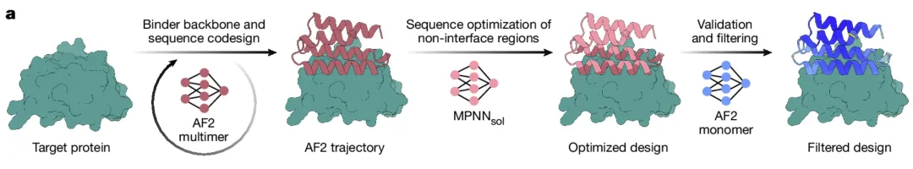
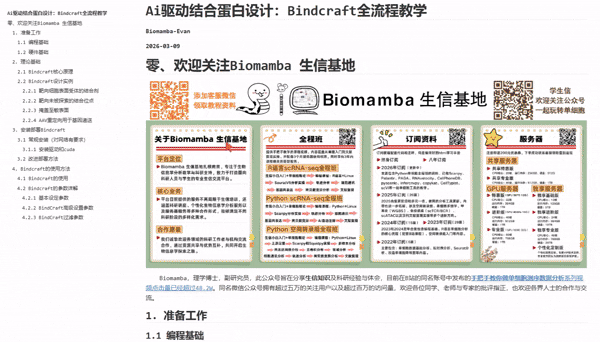
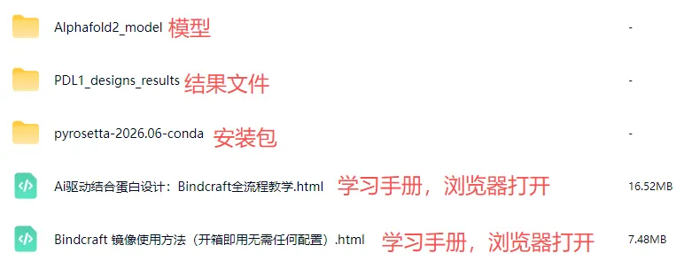

Ai驱动结合蛋白设计：Bindcraft全流程教学
原文：https://mp.weixin.qq.com/s?__biz=MzAwMzIzOTk5OQ==&mid=2247538886&idx=3&sn=6945c1ad968781b1b17a3a327287da56&chksm=9b3c2196ac4ba8803d6e10d505a96bd837956045d0a282198cc50e10e8bb6ded359426c11a75#rd 合集：AIDD & CADD

Bindcraft：用户友好的binder从头设计流程

 蛋白质主要依赖蛋白质-蛋白质相互作用（PPI）来执行复杂的生物学功能。因此，设计能够特异性靶向PPI的蛋白质结合剂具有极高的治疗与生物技术价值。然而，传统的实验方法以及早期基于物理的计算工具（如 Rosetta）往往费时费力、成功率较低（低于0.1%），且依赖于海量的结构采样。近年来，结合RFdiffusion和ProteinMPNN的深度学习方法大幅提升了设计的成功率，但仍存在一定的局限性：还是需要一定程度的高通量实验支持，且软件操作较为繁琐，要求用户具备一定的Linux系统使用经验。为此，洛桑联邦理工学院（EPFL）的团队开发了一款高度自动化的蛋白设计软件BindCraft（Nature 2025）。该软件利用AlphaFold2网络的反向传播机制 ，能够针对极具挑战性的治疗靶点，高效生成并精准识别出高亲和力结合剂。BindCraft不仅显著提升了按需设计结合剂的效率，其高度封装的特性也极大降低了使用门槛，为用户带来了更为便捷的操作体验。
本教程将重点介绍以下内容：Bindcraft的核心原理与设计实例、Bindcraft的安装与部署，Bindcraft的使用方法。
蛋白质主要依赖蛋白质-蛋白质相互作用（PPI）来执行复杂的生物学功能。因此，设计能够特异性靶向PPI的蛋白质结合剂具有极高的治疗与生物技术价值。然而，传统的实验方法以及早期基于物理的计算工具（如 Rosetta）往往费时费力、成功率较低（低于0.1%），且依赖于海量的结构采样。近年来，结合RFdiffusion和ProteinMPNN的深度学习方法大幅提升了设计的成功率，但仍存在一定的局限性：还是需要一定程度的高通量实验支持，且软件操作较为繁琐，要求用户具备一定的Linux系统使用经验。为此，洛桑联邦理工学院（EPFL）的团队开发了一款高度自动化的蛋白设计软件BindCraft（Nature 2025）。该软件利用AlphaFold2网络的反向传播机制 ，能够针对极具挑战性的治疗靶点，高效生成并精准识别出高亲和力结合剂。BindCraft不仅显著提升了按需设计结合剂的效率，其高度封装的特性也极大降低了使用门槛，为用户带来了更为便捷的操作体验。
本教程将重点介绍以下内容：Bindcraft的核心原理与设计实例、Bindcraft的安装与部署，Bindcraft的使用方法。 此教程还配备专属镜像，领取该教程之后可免费领取镜像。
此教程还配备专属镜像，领取该教程之后可免费领取镜像。
往期我们也出了Ai驱动结合蛋白质设计的教程，感兴趣的小伙伴可以点击正刊都在用的AI驱动蛋白质从头设计流程：RFdiffusion+ProteinMPNN+AlphaFold3学习哦~
优惠订阅资料或参与课程请联系客服微信[Biomamba_zhushou] 更多生信教程可见：为什么我们敢开放终身订阅
-Biomamba
更多生信教程可见：为什么我们敢开放终身订阅
-Biomamba


Bindcraft核心原理


BindCraft的设计管线可以清晰地分为三个主要阶段：
第一阶段：基于动态诱导契合的初始结构生成 流程首先借助ColabDesign 框架下的AlphaFold2多聚体模型，通过反向传播机制“幻觉”产出结合剂序列。这一步巧妙在于，它并非在静态骨架上盲目设计，而是每次迭代都会重新预测复合物结构 ，允许靶标和结合剂的主侧链发生适度形变，从而通过动态的诱导契合 贴合靶标位点。
第二阶段：聚焦真实表达率的序列重构 为了解决纯粹由AF2生成的蛋白质 在体外实验中往往表达量极低 的问题，流程引入了针对可溶性优化的MPNNsol 网络 。在这一阶段，系统会精准锁定并保护第一步生成的互作界面 不变，专门对结合剂的核心与表面序列进行重新设计，从而大幅提升目标蛋白在真实环境中的折叠稳定性和表达能力。
第三阶段：跨模型正交验证与严苛过滤 最后一步是剔除“假阳性”的质控环节。经过优化的序列会被跨模型送入 AF2 单体模型中进行重新预测，以消除多聚体模型可能带来的评估偏倚。最终，系统会综合 AF2 的置信度得分与经典的 Rosetta 物理能量评分体系 ，精准剔除物理上不合理的设计，输出最终可以直接用于实验筛选的高成功率候选序列。
所见即所得
以html格式提供学习手册，可在浏览器中打开并翻阅学习：

Bindcraft全流程教程目录：
一、准备工作
1.1 编程基础
1.2 硬件基础
二、理论基础
2.1 Bindcraft核心原理
2.2 Bindcraft设计实例
2.2.1 靶向细胞表面受体的结合剂
2.2.2 靶向未被探索的结合位点
2.2.3 掩盖至敏表面
2.2.4 AAV重定向用于基因递送
三、安装部署Bindcraft
3.1 常规安装（对网络有要求）
3.1.1 安装驱动和cuda
3.2 改进部署方法
四、Bindcraft的使用方法
4.1 Bindcraft的使用
4.2 Bindcraft的使用
4.2.1 基本设定参数
4.2.2 Bindcraft高级设置参数
4.2.3 Bindcraft过滤参数
文末下载链接中包含以下内容：

测试文件，总大小6.66GB
往期推送
Biomamba 生信基地现已开放终身订阅，现已包含几十篇订阅资料，未来37年持续更新：为什么我们敢开放终身订阅
2025年我们零差评完成订阅任务（2026订阅须知），2026已更新订阅内容：
风靡一时的scTenifoldKnk单细胞虚拟基因敲除,准不准?
scRNA拟时序分析三大Python包： palantir、PAGA、RNAvelocity
正刊都在用的AI驱动蛋白质从头设计流程：RFdiffusion+ProteinMPNN+AlphaFold3
转录因子、基因共表达网络分析手册：pySCENIC在脑、黑色素瘤中的应用
 **
**
**
**
持续更新中~
解锁前需阅读：2026订阅须知
学习手册领取：

本推送教程、测试文件下载链接：
https://pan.baidu.com/s/1DBBUnOQRyfD9jbDEwBqf_Q
提取码请联系客服微信获取：